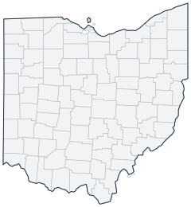

Historical county changes, 1790–1990 › Ohio

| Name↕ | Unit↕ | Existed↕ | FIPS↕ |
|---|---|---|---|
| Adams County | county | 1800–1990 | 39001 |
| Allen County | county | 1830–1990 | 39003 |
| Ashland County | county | 1850–1990 | 39005 |
| Ashtabula County | county | 1820–1990 | 39007 |
| Athens County | county | 1810–1990 | 39009 |
| Auglaize County | county | 1850–1990 | 39011 |
| Belmont County | county | 1810–1990 | 39013 |
| Brown County | county | 1820–1990 | 39015 |
| Butler County | county | 1810–1990 | 39017 |
| Carroll County | county | 1840–1990 | 39019 |
| Champaign County | county | 1810–1990 | 39021 |
| Clark County | county | 1820–1990 | 39023 |
| Clermont County | county | 1810–1990 | 39025 |
| Clinton County | county | 1810–1990 | 39027 |
| Columbiana County | county | 1810–1990 | 39029 |
| Coshocton County | county | 1820–1990 | 39031 |
| Crawford County | county | 1830–1990 | 39033 |
| Cuyahoga County | county | 1810–1990 | 39035 |
| Darke County | county | 1820–1990 | 39037 |
| Defiance County | county | 1850–1990 | 39039 |
| Delaware County | county | 1810–1990 | 39041 |
| Erie County | county | 1840–1990 | 39043 |
| Fairfield County | county | 1810–1990 | 39045 |
| Fayette County | county | 1810–1990 | 39047 |
| Franklin County | county | 1810–1990 | 39049 |
| Fulton County | county | 1850–1990 | 39051 |
| Gallia County | county | 1810–1990 | 39053 |
| Geauga County | county | 1810–1990 | 39055 |
| Greene County | county | 1810–1990 | 39057 |
| Guernsey County | county | 1810–1990 | 39059 |
| Hamilton County | county | 1800–1990 | 39061 |
| Hancock County | county | 1830–1990 | 39063 |
| Hardin County | county | 1820–1990 | 39065 |
| Harrison County | county | 1820–1990 | 39067 |
| Henry County | county | 1830–1990 | 39069 |
| Highland County | county | 1810–1990 | 39071 |
| Hocking County | county | 1820–1990 | 39073 |
| Holmes County | county | 1830–1990 | 39075 |
| Huron County | county | 1820–1990 | 39077 |
| Jackson County | county | 1820–1990 | 39079 |
| Jefferson County | county | 1800–1990 | 39081 |
| Knox County | county | 1810–1990 | 39083 |
| Lake County | county | 1840–1990 | 39085 |
| Lawrence County | county | 1820–1990 | 39087 |
| Licking County | county | 1810–1990 | 39089 |
| Logan County | county | 1820–1990 | 39091 |
| Lorain County | county | 1830–1990 | 39093 |
| Lucas County | county | 1840–1990 | 39095 |
| Madison County | county | 1810–1990 | 39097 |
| Mahoning County | county | 1850–1990 | 39099 |
| Marion County | county | 1830–1990 | 39101 |
| Medina County | county | 1820–1990 | 39103 |
| Meigs County | county | 1820–1990 | 39105 |
| Mercer County | county | 1820–1990 | 39107 |
| Miami County | county | 1810–1990 | 39109 |
| Monroe County | county | 1820–1990 | 39111 |
| Montgomery County | county | 1810–1990 | 39113 |
| Morgan County | county | 1820–1990 | 39115 |
| Morrow County | county | 1850–1990 | 39117 |
| Muskingum County | county | 1810–1990 | 39119 |
| Noble County | county | 1860–1990 | 39121 |
| Ottawa County | county | 1840–1990 | 39123 |
| Paulding County | county | 1830–1990 | 39125 |
| Perry County | county | 1820–1990 | 39127 |
| Pickaway County | county | 1810–1990 | 39129 |
| Pike County | county | 1820–1990 | 39131 |
| Portage County | county | 1810–1990 | 39133 |
| Preble County | county | 1810–1990 | 39135 |
| Putnam County | county | 1830–1990 | 39137 |
| Richland County | county | 1820–1990 | 39139 |
| Ross County | county | 1800–1990 | 39141 |
| Sandusky County | county | 1820–1990 | 39143 |
| Scioto County | county | 1810–1990 | 39145 |
| Seneca County | county | 1830–1990 | 39147 |
| Shelby County | county | 1820–1990 | 39149 |
| Stark County | county | 1810–1990 | 39151 |
| Summit County | county | 1840–1990 | 39153 |
| Trumbull County | county | 1800–1990 | 39155 |
| Tuscarawas County | county | 1810–1990 | 39157 |
| Union County | county | 1820–1990 | 39159 |
| Van Wert County | county | 1830–1990 | |
| Vinton County | county | 1850–1990 | |
| Warren County | county | 1810–1990 | |
| Washington County | county | 1800–1990 | |
| Wayne County | county | 1820–1990 | 39169 |
| Williams County | county | 1830–1990 | 39171 |
| Wood County | county | 1820–1990 | 39173 |
| Wyandot County | county | 1850–1990 | 39175 |
Note: Decimals in FIPS codes come from Forstall, who gives every county a code, including counties that no longer exist. A county abolished between 1930 and 1990 keeps the code it had. However, a county which was abolished prior to 1930 never received a code. Such a county is given the code of the county which precedes it alphabetically plus a decimal to hold its place in the list.
Source: Richard L. Forstall (1996), Population of States and Counties of the United States: 1790 to 1990, U.S. Bureau of the Census (public domain). Always check a row against the scan it links to.